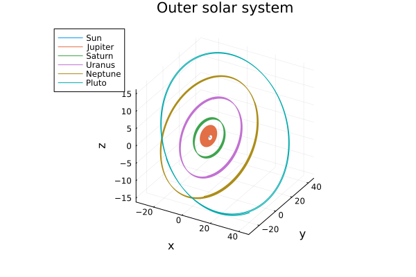

Simulating the Outer Solar System
Data
The chosen units are masses relative to the sun, meaning the sun has mass $1$. We have taken $m_0 = 1.00000597682$ to take account of the inner planets. Distances are in astronomical units, times in earth days, and the gravitational constant is thus $G = 2.95912208286 \cdot 10^{-4}$.
| planet | mass | initial position | initial velocity |
|---|---|---|---|
| Jupiter | $m_1 = 0.000954786104043$ | [-3.5023653, -3.8169847, -1.5507963] | [0.00565429, -0.00412490, -0.00190589] |
| Saturn | $m_2 = 0.000285583733151$ | [9.0755314, -3.0458353, -1.6483708] | [0.00168318, 0.00483525, 0.00192462] |
| Uranus | $m_3 = 0.0000437273164546$ | [8.3101420, -16.2901086, -7.2521278] | [0.00354178, 0.00137102, 0.00055029] |
| Neptune | $m_4 = 0.0000517759138449$ | [11.4707666, -25.7294829, -10.8169456] | [0.00288930, 0.00114527, 0.00039677] |
| Pluto | $m_5 = 1/(1.3 \cdot 10^8 )$ | [-15.5387357, -25.2225594, -3.1902382] | [0.00276725, -0.00170702, -0.00136504] |
The data is taken from the book “Geometric Numerical Integration” by E. Hairer, C. Lubich and G. Wanner.
import Plots, OrdinaryDiffEq as ODE
import ModelingToolkit as MTK
using ModelingToolkit: t_nounits as t, D_nounits as D, @mtkbuild, @variables
Plots.gr()
G = 2.95912208286e-4
M = [
1.00000597682,
0.000954786104043,
0.000285583733151,
0.0000437273164546,
0.0000517759138449,
1 / 1.3e8
]
planets = ["Sun", "Jupiter", "Saturn", "Uranus", "Neptune", "Pluto"]
pos = [0.0 -3.5023653 9.0755314 8.310142 11.4707666 -15.5387357
0.0 -3.8169847 -3.0458353 -16.2901086 -25.7294829 -25.2225594
0.0 -1.5507963 -1.6483708 -7.2521278 -10.8169456 -3.1902382]
vel = [0.0 0.00565429 0.00168318 0.00354178 0.0028893 0.00276725
0.0 -0.0041249 0.00483525 0.00137102 0.00114527 -0.00170702
0.0 -0.00190589 0.00192462 0.00055029 0.00039677 -0.00136504]
tspan = (0.0, 200_000.0)(0.0, 200000.0)The N-body problem's Hamiltonian is
\[H(p,q) = \frac{1}{2}\sum_{i=0}^{N}\frac{p_i^T p_i}{m_i} - G\sum_{i=1}^N \sum_{j=0}^{i-1}\frac{m_i m_j}{\left\lVert q_i - q_j \right\rVert}\]
where each $p_i$ and $q_i$ is a 3-dimensional vector describing the planet's position and momentum, respectively.
Here, we want to solve for the motion of the five outer planets relative to the sun, namely, Jupiter, Saturn, Uranus, Neptune, and Pluto.
const ∑ = sum
const N = 6
@variables u(t)[1:3, 1:N]
u = collect(u)
potential = -G *
∑(
i -> ∑(j -> (M[i] * M[j]) / √(∑(k -> (u[k, i] - u[k, j])^2, 1:3)), 1:(i - 1)),
2:N)\[ \begin{equation} - 0.00029591 ~ \left( \frac{3.3636 \cdot 10^{-13}}{\sqrt{\left( - u\_{1,4}\left( t \right) + u\_{1,6}\left( t \right) \right)^{2} + \left( - u\_{2,4}\left( t \right) + u\_{2,6}\left( t \right) \right)^{2} + \left( - u\_{3,4}\left( t \right) + u\_{3,6}\left( t \right) \right)^{2}}} + \frac{3.9828 \cdot 10^{-13}}{\sqrt{\left( - u\_{1,5}\left( t \right) + u\_{1,6}\left( t \right) \right)^{2} + \left( - u\_{2,5}\left( t \right) + u\_{2,6}\left( t \right) \right)^{2} + \left( - u\_{3,5}\left( t \right) + u\_{3,6}\left( t \right) \right)^{2}}} + \frac{2.1968 \cdot 10^{-12}}{\sqrt{\left( - u\_{1,3}\left( t \right) + u\_{1,6}\left( t \right) \right)^{2} + \left( - u\_{2,3}\left( t \right) + u\_{2,6}\left( t \right) \right)^{2} + \left( - u\_{3,3}\left( t \right) + u\_{3,6}\left( t \right) \right)^{2}}} + \frac{7.3445 \cdot 10^{-12}}{\sqrt{\left( - u\_{1,2}\left( t \right) + u\_{1,6}\left( t \right) \right)^{2} + \left( - u\_{2,2}\left( t \right) + u\_{2,6}\left( t \right) \right)^{2} + \left( - u\_{3,2}\left( t \right) + u\_{3,6}\left( t \right) \right)^{2}}} + \frac{2.264 \cdot 10^{-9}}{\sqrt{\left( - u\_{1,4}\left( t \right) + u\_{1,5}\left( t \right) \right)^{2} + \left( - u\_{2,4}\left( t \right) + u\_{2,5}\left( t \right) \right)^{2} + \left( - u\_{3,4}\left( t \right) + u\_{3,5}\left( t \right) \right)^{2}}} + \frac{7.6924 \cdot 10^{-9}}{\sqrt{\left( - u\_{1,1}\left( t \right) + u\_{1,6}\left( t \right) \right)^{2} + \left( - u\_{2,1}\left( t \right) + u\_{2,6}\left( t \right) \right)^{2} + \left( - u\_{3,1}\left( t \right) + u\_{3,6}\left( t \right) \right)^{2}}} + \frac{1.2488 \cdot 10^{-8}}{\sqrt{\left( - u\_{1,3}\left( t \right) + u\_{1,4}\left( t \right) \right)^{2} + \left( - u\_{2,3}\left( t \right) + u\_{2,4}\left( t \right) \right)^{2} + \left( - u\_{3,3}\left( t \right) + u\_{3,4}\left( t \right) \right)^{2}}} + \frac{1.4786 \cdot 10^{-8}}{\sqrt{\left( - u\_{1,3}\left( t \right) + u\_{1,5}\left( t \right) \right)^{2} + \left( - u\_{2,3}\left( t \right) + u\_{2,5}\left( t \right) \right)^{2} + \left( - u\_{3,3}\left( t \right) + u\_{3,5}\left( t \right) \right)^{2}}} + \frac{4.175 \cdot 10^{-8}}{\sqrt{\left( - u\_{1,2}\left( t \right) + u\_{1,4}\left( t \right) \right)^{2} + \left( - u\_{2,2}\left( t \right) + u\_{2,4}\left( t \right) \right)^{2} + \left( - u\_{3,2}\left( t \right) + u\_{3,4}\left( t \right) \right)^{2}}} + \frac{4.9435 \cdot 10^{-8}}{\sqrt{\left( - u\_{1,2}\left( t \right) + u\_{1,5}\left( t \right) \right)^{2} + \left( - u\_{2,2}\left( t \right) + u\_{2,5}\left( t \right) \right)^{2} + \left( - u\_{3,2}\left( t \right) + u\_{3,5}\left( t \right) \right)^{2}}} + \frac{2.7267 \cdot 10^{-7}}{\sqrt{\left( - u\_{1,2}\left( t \right) + u\_{1,3}\left( t \right) \right)^{2} + \left( - u\_{2,2}\left( t \right) + u\_{2,3}\left( t \right) \right)^{2} + \left( - u\_{3,2}\left( t \right) + u\_{3,3}\left( t \right) \right)^{2}}} + \frac{4.3728 \cdot 10^{-5}}{\sqrt{\left( - u\_{1,1}\left( t \right) + u\_{1,4}\left( t \right) \right)^{2} + \left( - u\_{2,1}\left( t \right) + u\_{2,4}\left( t \right) \right)^{2} + \left( - u\_{3,1}\left( t \right) + u\_{3,4}\left( t \right) \right)^{2}}} + \frac{5.1776 \cdot 10^{-5}}{\sqrt{\left( - u\_{1,1}\left( t \right) + u\_{1,5}\left( t \right) \right)^{2} + \left( - u\_{2,1}\left( t \right) + u\_{2,5}\left( t \right) \right)^{2} + \left( - u\_{3,1}\left( t \right) + u\_{3,5}\left( t \right) \right)^{2}}} + \frac{0.00028559}{\sqrt{\left( - u\_{1,1}\left( t \right) + u\_{1,3}\left( t \right) \right)^{2} + \left( - u\_{2,1}\left( t \right) + u\_{2,3}\left( t \right) \right)^{2} + \left( - u\_{3,1}\left( t \right) + u\_{3,3}\left( t \right) \right)^{2}}} + \frac{0.00095479}{\sqrt{\left( - u\_{1,1}\left( t \right) + u\_{1,2}\left( t \right) \right)^{2} + \left( - u\_{2,1}\left( t \right) + u\_{2,2}\left( t \right) \right)^{2} + \left( - u\_{3,1}\left( t \right) + u\_{3,2}\left( t \right) \right)^{2}}} \right) \end{equation} \]
Hamiltonian System
NBodyProblem constructs a second order ODE problem under the hood. We know that a Hamiltonian system has the form of
\[\dot{p} = -\frac{\partial H}{\partial q}, \quad \dot{q} = \frac{\partial H}{\partial p}\]
For an N-body system, we can simplify this as:
\[\dot{p} = -\nabla V(q), \quad \dot{q} = M^{-1} p.\]
Thus, $\dot{q}$ is defined by the masses. We only need to define $\dot{p}$, and this is done internally by taking the gradient of $V$. Therefore, we only need to pass the potential function and the rest is taken care of.
eqs = vec(@. D(D(u))) .~ .-MTK.gradient(potential, vec(u)) ./
repeat(M, inner = 3)
@mtkbuild sys = MTK.System(eqs, t)
prob = ODE.ODEProblem(sys, [vec(u .=> pos); vec(D.(u) .=> vel)], tspan)
sol = ODE.solve(prob, ODE.Tsit5());retcode: Success
Interpolation: specialized 4th order "free" interpolation
t: 862-element Vector{Float64}:
0.0
0.4345623854592078
35.99898429859733
174.61856264192386
380.59547356844905
611.8666224958926
881.0171294254685
1216.5292888230308
1576.6203478300724
1950.5247369459682
⋮
199464.1763426005
199535.15658191757
199610.59925970965
199680.2127842468
199755.12591135743
199821.69348971432
199894.37470391282
199963.8563633727
200000.0
u: 862-element Vector{Vector{Float64}}:
[-3.1902382, -0.00136504, -10.8169456, 0.00039677, -7.2521278, 0.00055029, -1.6483708, 0.00192462, -1.5507963, -0.00190589 … 11.4707666, 0.0028893, 8.310142, 0.00354178, 9.0755314, 0.00168318, -3.5023653, 0.00565429, 0.0, 0.0]
[-3.190831391666314, -0.0013650244789412218, -10.816773167663484, 0.0003968207122091521, -7.251888638015288, 0.0005504126494813136, -1.6475343823037847, 0.0019248511933338966, -1.5516242540172815, -0.0019046284357956216 … 11.472022169413352, 0.0028892462117755886, 8.31168109382013, 0.0035416394156575887, 9.07626256988575, 0.0016819059109041002, -3.4999075394383845, 0.005657137663985553, -5.098303779711275e-10, -2.3461051313643876e-9]
[-3.2393549980716214, -0.0013637448146004588, -10.802586698126767, 0.00040096840898669285, -7.232135255028369, 0.0005604321763102766, -1.5787461360440151, 0.0019434002837321665, -1.6174958607190362, -0.0017989198926536812 … 11.574698023221423, 0.0028848240788448567, 8.437431867001305, 0.003530050705299505, 9.134218445434408, 0.0015771360623620687, -3.2946465670600236, 0.005883789353087844, -3.423854171293771e-6, -1.8809265799702778e-7]
[-3.4280420079701845, -0.0013585800876313096, -10.74588663345915, 0.0004170855591638568, -7.151759201209805, 0.0005991387459027417, -1.3047059800667917, 0.0020085086352349597, -1.8360580056734275, -0.0013434734330002656 … 11.973377190937034, 0.0028672092013036343, 8.92355578462731, 0.0034833220382023663, 9.324079995068509, 0.001159925238119635, -2.4243132190891274, 0.006637565644492371, -7.333082520272361e-5, -7.856804265309118e-7]
[-3.707045233737575, -0.001350390835100102, -10.657522537472943, 0.00044088377327911683, -7.022513730851573, 0.0006555971869234949, -0.8828569747252994, 0.0020830012488561394, -2.03408656975519, -0.0005615639064162919 … 12.561169018902879, 0.002839927313840057, 9.633516314698607, 0.0034093846352291437, 9.497267468162491, 0.0005177706296843234, -0.9769652672315607, 0.00732295326725339, -0.00029245595676065096, -1.2520419390932113e-6]
[-4.018219555698541, -0.0013404744882407798, -10.55249040041501, 0.00046737811665809313, -6.863712622101781, 0.0007174054455085893, -0.3946555485512191, 0.0021327085030388186, -2.053134825185203, 0.0004056976190662129 … 13.214270892868017, 0.002807730263909038, 10.411813081950893, 0.003320134583039653, 9.531368126807521, -0.00022593519308113902, 0.7382856384642209, 0.00737629704852887, -0.000577605115613285, -1.0850151360140068e-6]
[-4.377351821263963, -0.0013279943980920733, -10.4225811285836, 0.00049789043358629, -6.661187598566764, 0.0007871025694175595, 0.18184560197133734, 0.0021422344170847346, -1.7914558850689803, 0.001524119679033659 … 13.964702392241312, 0.002768198921784653, 11.29056443664343, 0.0032082766977699646, 9.35232629247271, -0.0011053612366158495, 2.616939493415361, 0.006393763850831102, -0.0007330937430260894, 1.1117424004516135e-7]
[-4.820111737629151, -0.001311063436678128, -10.249222799506164, 0.0005354048301784836, -6.383017215336513, 0.0008703961459054513, 0.8921234781572502, 0.002077267176953791, -1.0800341601190968, 0.0026373811216874425 … 14.88478091799421, 0.002715860217496232, 12.342012873833715, 0.003057381822894924, 8.798579091124084, -0.00219007808374467, 4.347909049772064, 0.0036755225624795053, -0.0002465380602718617, 3.0255810736516264e-6]
[-5.288698031255902, -0.0012912599791606685, -10.049281927244104, 0.0005749723421685663, -6.054200506543434, 0.0009550585122444177, 1.6130640693535738, 0.001910140608322444, -0.016960072978742132, 0.0031164430292441457 … 15.8520692715453, 0.0026559689028343722, 13.411790811130421, 0.002882098483398166, 7.809141261191574, -0.0032893506670255575, 4.951190559657274, -0.00043809969483555244, 0.0015898814749411504, 7.277884644905893e-6]
[-5.767395463053767, -0.0012689919595970428, -9.826742706901163, 0.0006152369981982314, -5.681515563669695, 0.0010374571321582488, 2.2785511623098795, 0.0016324385357110599, 1.085323621832568, 0.0026116141120660847 … 16.83289924854452, 0.0025897799187532397, 14.453259951043403, 0.0026864469850750635, 6.385816124419887, -0.004295404494929296, 3.9773640007046147, -0.004617706489447968, 0.005141958173610205, 1.1567784087392676e-5]
⋮
[-15.12428321145426, 0.00013245130057539526, 7.4315776951389605, 0.0008811786968070779, 7.078852434351263, -0.0004527565143620468, -0.31137881425065644, -0.0021362445252223108, -0.2476271858737217, 0.0057634393409658315 … 21.925029902362844, -0.002271415844529555, -3.779058341746134, -0.0038077595252227576, -8.24771418340567, 0.00033960493122794493, 2.597728375710067, -0.000724469903621151, 1.2325523695009155, 7.062596806457794e-6]
[-15.114710858659436, 0.00013726413736409116, 7.493906799414991, 0.0008750512521216423, 7.045893479723227, -0.00047591354873997193, -0.46291236561743043, -0.002132891443935548, 0.12274462573967654, 0.00415292593475153 … 21.763222135660016, -0.0022877968556466555, -4.04876070501613, -0.0037914569940202987, -8.21551444714978, 0.0005673012351435305, 2.171878677522575, -0.010694180169522076, 1.2334088629697566, 1.6516590126110436e-5]
[-15.104163016575788, 0.00014235739894889046, 7.559675650564673, 0.0008684844762406617, 7.009062917501749, -0.0005004598171157485, -0.6235657813361021, -0.0021253907795129433, 0.28495666451285534, -0.00012125544499117648 … 21.58997228355702, -0.002305065794872613, -4.334114311936603, -0.0037731551668865955, -8.163670241915883, 0.0008065985304772452, 1.1560258509697292, -0.014716418089412023, 1.2348519412393935, 2.028869895561162e-5]
[-15.094090024875962, 0.00014703692172920942, 7.619921572132155, 0.0008623760000122364, 6.973437719918136, -0.0005230426461585538, -0.7711770863362468, -0.002114927659561817, 0.1284096826292607, -0.004174989546655308 … 21.42895771930952, -0.002320869577720617, -4.596163132017202, -0.003755378273250854, -8.09991625098483, 0.001024577622422391, 0.2515216746020872, -0.009941094064845496, 1.2361476061253385, 1.5667103277921365e-5]
[-15.082887077037949, 0.00015205105468888292, 7.684277012530359, 0.0008557501975010555, 6.933347106815876, -0.0005472659616648856, -0.9290754611443719, -0.002099941274711382, -0.2733022554191584, -0.005914457227321276 … 21.254461476528693, -0.0023377351954038377, -4.876744204094014, -0.0037352958226249144, -8.014479342594191, 0.0012557684635037913, -0.0833574972508053, 0.0015911414045346097, 1.2369274918652213, 4.590322135364936e-6]
[-15.072617637514437, 0.0001564877716381835, 7.741044998762698, 0.0008498173768013572, 6.896202570000974, -0.0005687168941236114, -1.0683309691256593, -0.002083450192965714, -0.6242699790875293, -0.004127768088198349 … 21.098348757614914, -0.002352598305520789, -5.124776605861796, -0.00371662258487358, -7.924138260363586, 0.0014579657718091072, 0.36693937953979483, 0.011298737607877113, 1.2369023243669035, -4.736091242059667e-6]
[-15.06106848238177, 0.0001613117477921273, 7.802573909148575, 0.0008432915851493848, 6.854018931379957, -0.0005920530537094922, -1.2190038670401349, -0.0020621049845998825, -0.7735067697051831, 0.0002411778246242779 … 20.926773328706137, -0.0023686926497924147, -5.394137651459188, -0.0036953459140358926, -7.810262033364875, 0.001674927483288424, 1.3741070643458269, 0.014843420826708972, 1.2363782848557716, -8.182542643787225e-6]
[-15.049700635517883, 0.00016590368416849794, 7.860949121362133, 0.00083700649578688, 6.81210963146918, -0.0006142733768507334, -1.3614804101314608, -0.0020385077879030607, -0.6095084169206876, 0.004227914291723056 … 20.761661940075516, -0.0023839468910170844, -5.650164631691982, -0.003674141068707149, -7.686794912296856, 0.0018783500766333657, 2.2675795796393223, 0.009603033468161, 1.2359393572439112, -3.2373546988628376e-6]
[-15.043661226907014, 0.0001682847660440234, 7.891142208622381, 0.0008337191577366363, 6.789699247604722, -0.0006257959267154232, -1.4349182809487384, -0.0020250238346580327, -0.43250895025050323, 0.0054353243107729396 … 20.675354847003064, -0.0023918308357104403, -5.782756769087059, -0.0036627770095602153, -7.617018106252535, 0.001982543863559828, 2.525322053016213, 0.004479354345387266, 1.2359071130667294, 1.6247891406544974e-6]plt = Plots.plot()
for i in 1:N
Plots.plot!(plt, sol, idxs = (u[:, i]...,), lab = planets[i])
end
Plots.plot!(plt; xlab = "x", ylab = "y", zlab = "z", title = "Outer solar system")